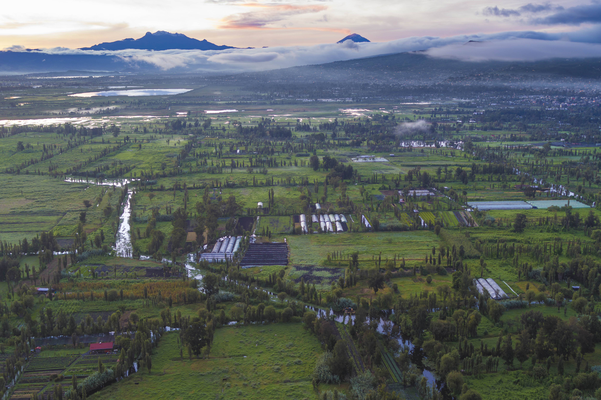
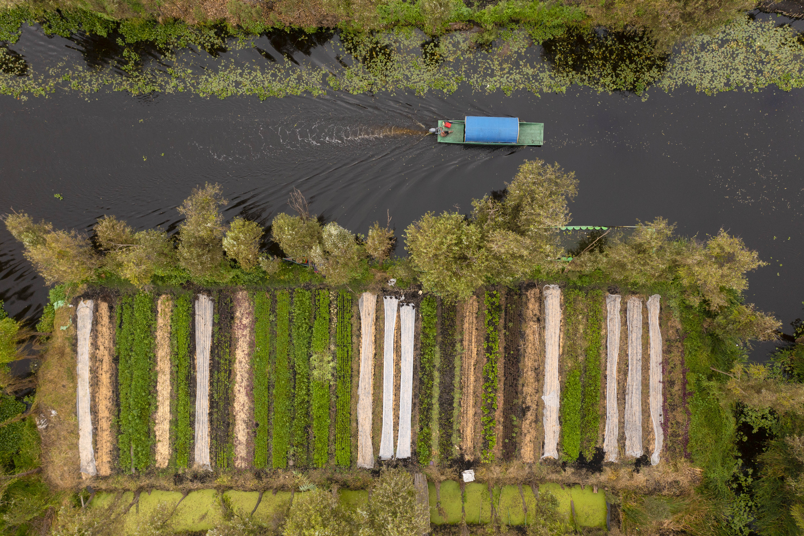

Arca Tierra, alimentos mexicanos naturales a tu mesa

Arca tierra lleva alimentos mexicanos naturales a tu mesa. Somos una red local de personas expertas en promover la buena alimentación a través de la agricultura regenerativa y el comercio justo.
Estamos conformados por especialistas en agricultura campesina, cultura alimentaria local, impacto social, naturaleza y diferentes manifestaciones gastronómicas. Nacimos en las chinampas de Xochimilco: ahí tenemos producción propia y parcelas demostrativas, trabajamos en 18 chinampas.
Desde 2009, nuestro equipo promueve la sostenibilidad y la agricultura campesina en términos productivos, sociales, ecológicos y económicos. Lucio Usobiaga es el director de nuestra iniciativa.
Sembramos un futuro abundante

El corazón de Arca Tierra son más de 50 familias campesinas de comunidades de Milpa Alta (CDMX), Huasca de Ocampo (Hidalgo), Amanalco y Polvillos (Estado de México) y Pahuatlán (Puebla), entre otros.
Estas familias cultivan sin agrotóxicos, rescatan semillas locales y producen alimentos mexicanos de temporada con un sabor y una calidad que solo la agricultura campesina puede ofrecer.
Nuestra red se basa en la confianza, la amistad y el reconocimiento del valor del trabajo rural. Más allá de los acuerdos comerciales, nos guiamos por principios de comercio justo, prácticas de agricultura regenerativa y un compromiso real con la tierra y la biodiversidad.
¿Qué hacemos en arca tierra?
Nuestro proyecto opera bajo tres pilares centrales:
- Vendemos alimentos mexicanos naturales en nuestra tienda en línea y canastas con la cosecha de la semana a través de suscripciones. ¿Quieres hacernos un pedido?
- También tenemos a la venta vegetales, frutas y productos de temporada en tiendas y restaurantes en la CDMX. Si quieres saber dónde o hacernos solicitudes, contáctanos.
- Organizamos experiencias privadas y públicas de turismo rural y gastronómico en las chinampas de Xochimilco. ¿Quieres organizar algún evento o se te antoja asistir a alguna de nuestras actividades programadas?

Nuestros valores
En Arca Tierra trabajamos con un propósito claro: regenerar suelos, conservar chinampas y producir alimentos agroecológicos con impacto positivo para las comunidades campesinas y la tierra. Estos son los valores que guían cada decisión y acción dentro de nuestra red de agricultura regenerativa:
Raíces Vivas
Colocamos a las familias campesinas en el centro de lo que hacemos. Valoramos su trabajo, protegemos su dignidad y fortalecemos su economía, pues son la raíz de cada alimento que llevamos hasta tu mesa.
Palabras clave: familias campesinas, agricultura regenerativa
Sabiduría Ancestral
Aplicamos y honramos prácticas agrícolas tradicionales para regenerar suelos, recuperar semillas y producir alimentos de temporada que nutren a las personas y respetan la tierra.
Palabras clave: prácticas agrícolas ancestrales, regenerar suelos

🌍 Guardianes de la Tierra
Consideramos la tierra como un ser vivo y nuestro hogar común. Protegemos su fertilidad y biodiversidad, convencidos de que todas y todos podemos convertirnos en guardianes de la tierra a través de decisiones conscientes todos los días.
Palabras clave: biodiversidad, conservación de la tierra
🍃 Cosecha Consciente
Optimizamos recursos, cultivamos sin agrotóxicos y reducimos el desperdicio en cada etapa, desde la siembra hasta la entrega a domicilio de alimentos frescos y agroecológicos.
Palabras clave: alimentos agroecológicos, minimizar desperdicio alimentario
Elección Responsable
Creemos que cada persona tiene el poder de transformar el sistema alimentario a través de sus decisiones de consumo. Promovemos hábitos de compra que regeneran la tierra, respaldan el trabajo campesino y alimentan familias de forma saludable.
Palabras clave: consumo responsable, alimentos sostenibles
Regenerar la tierra, regenerar la vida
Cada valor refuerza nuestra misión de ofrecer alimentos agroecológicos, apoyar comunidades rurales y conservar uno de los paisajes agrícolas más antiguos: las chinampas de Xochimilco.
CTA final
Únete a Arca Tierra y sé parte de la regeneración: cada alimento cuenta para sembrar un futuro abundante.
Conoce Nuestros Productos